AHU Economizer Configuration User Guide:¶
AHU Application Configuration¶
The AHU Application behavior is controlled through these configuration Pages:
Importing Master Driver Configuration Store¶
At the initial homepage, the user will be prompted to upload the Master Driver file. Values within the Master Driver Configuration Store will be parsed to provide options for Campus, Buidling, Device and Points throughout the application.
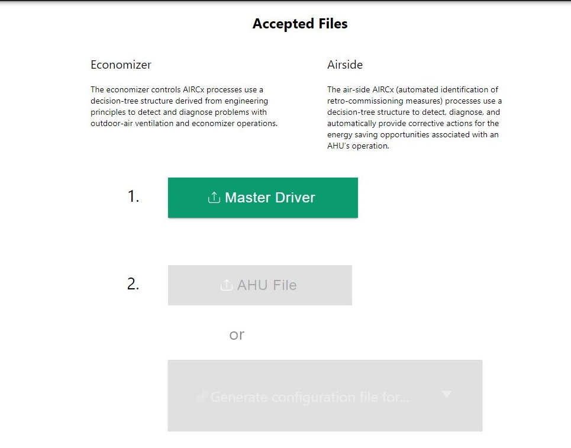Once the user has selected the Master Driver Configuration Store, this homepage will not appear again. However, if the user needs to upload a different Master Driver Configuration Store at any point, this option can be accessed via the Menu icon in the top left of the application.
Warning
Uploading a new Master Driver Configuration Store will remove all current data in the application.
After a Master Driver File is uploaded, there will be two new buttons that will appear as green below.
Below The Master Driver button, there are two buttons that say: AHU File and Generate configuration file for… The Ahu File will allow the user to submit a file that has been created by the AHU config previously, and the Generate configuration file for… will allow the user to create a new configuration file for either the ECONOMIZER or AIRSIDE.

Economizer¶
This section will go over all of the items that are located within the Economizer button located in the Generate configuration file for… button.
When the Economizer is selected there will be a prompt to select Campus, Building, and Device. These will all be selected as dropdown inputs.

Point Mapping¶
Point Mapping will be the first tab on the left side of the Economizer page. This will be located underneath the main configuration file and the Default Economizer.
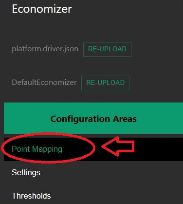Once Point Mapping is selected, configurations will show on the center of the screen.

Once the configuration is shown in the center of the screen, the dropdown inputs may be selected to configure.
All of the Point Mapping configuration settings will be drop down inputs that are dependant Upon the main configuration file selected for the page.
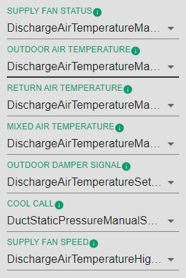Settings¶
Settings is the second tab inside of the Ahu configuration Economizer section. Once settings is selected the center section will populate with configurations.
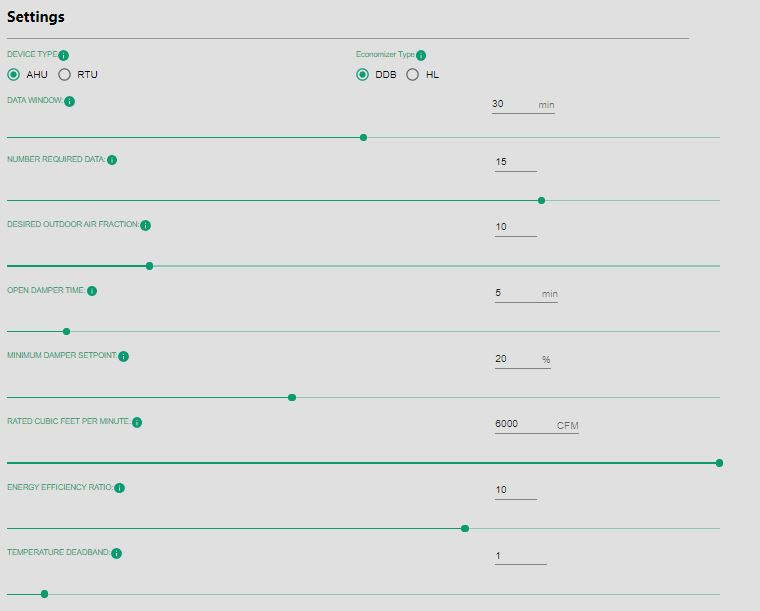Device Type
Device Type will give you an option to either choose AHU or RTU underneath the settings title.

Economizer Type
Economizer type has two selections: DDB and HL. Choosing one will provide specific configuration settings.
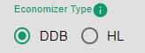Economizer Type: DDB¶
Data Window
This selection will be an integer type ranging from 0 to 60 minutes. The user may input an integer or use the slider to obtain the number required.

Numbered Required Data
This selection will be an integer type ranging from 0 to 20. The user may input an integer or use the slider to obtain the number required.
Desired Outdoor Air Fraction
This selection will be an integer type ranging from 5 to 30. The user may input an integer or use the slider to obtain the number required.

Open Damper Time
This selection will be an integer type ranging from 0 to 60 minutes. The user may input an integer or use the slider to obtain the number required.

Minimum Damper Setpoint
This selection will be an integer type ranging from 0 to 50 %. The user may input an integer or use the slider to obtain the number required.
Rated Cubic Feet Per Minute
This selection will be an integer type ranging from 0 to 6000 CFM. The user may input an integer or use the slider to obtain the number required.
Energy Efficient Ratio
This selection will be an integer type ranging from 1 to 15. The user may input an integer or use the slider to obtain the number required.
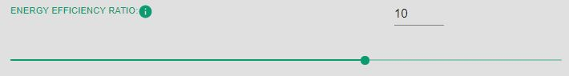Temperature Deadband
This selection will be a floating point number ranging from 0.5 to 10. The user may also input a floating point number or use the slider to obtain the number required.

Economizer type: HL¶
The Economizer type HL will be the next selection. Once this option is selected, there will be new settings that the user may configure.
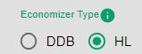Economizer Switchover Setpoint
This selection will be a integer number ranging from 0 to 20. The user may input an integer or use the slider to obtain the number required.
Data window
This selection will be a floating point number ranging from 0 to 60 minutes. The user may input an integer or use the slider to obtain the number required. .. image:: _images/data_Win.jpg
Number Required Data
This selection will be a floating point number ranging from 0 to 60 minutes. The user may input an integer or use the slider to obtain the number required.
Desired Outdoor Air Fraction
This selection will be a floating point number ranging from 5 to 30. The user may input a floating point number or use the slider to obtain the number required.
Open Damper Time
This selection will be a floating point number ranging from 0 to 60 minutes. The user may input an integer or use the slider to obtain the number required.

Minimum Damper Setpoint
This selection will be a floating point number ranging from 0 to 50%. The user may input an integer or use the slider to obtain the number required.
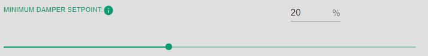Rated Cubic Feet Per Minute
This selection will be a floating point number ranging from 0 to 6000 CFM. The user may input an integer or use the slider to obtain the number required.

Energy Efficient Ratio
This selection will be a floating point number ranging from 1 to 15. The user may input an integer or use the slider to obtain the number required.
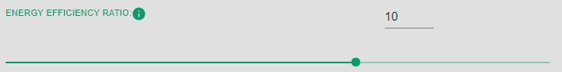Temperature Deadband
This selection will be a floating point number ranging from 1 to 15. The user may input an integer or use the slider to obtain the number required.
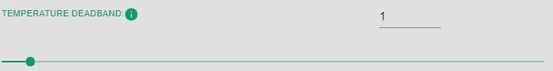Thresholds¶
The last tab in the AHU config: Economizer is the Threshold tab.
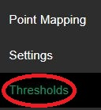Once this tab is selected, there will be two options that appear on the center of the screen.
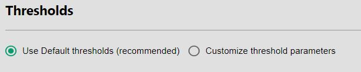If Use Default thresholds* is selected, there will be no options to configure.
If Customize Threshold Parameters is selected, there will be new settings to configure.
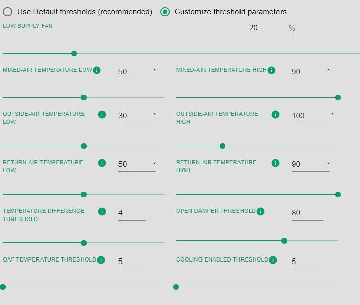Low Supply Fan
Mixed-Air Temperature Low
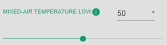Mixed-Air Temperature High

Outside-Air Temperature Low
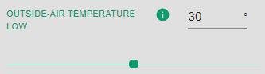Outside-Air Temperature High
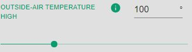Return-Air Temperature Low
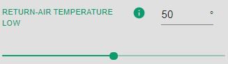Return-Air Temperature High
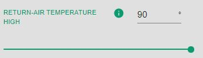Temperature Difference Threshold
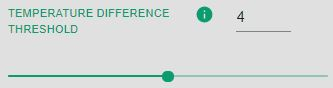Open Damper Threshold

OAF Temperature Threshold
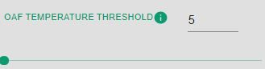Cooling enabled Threshold